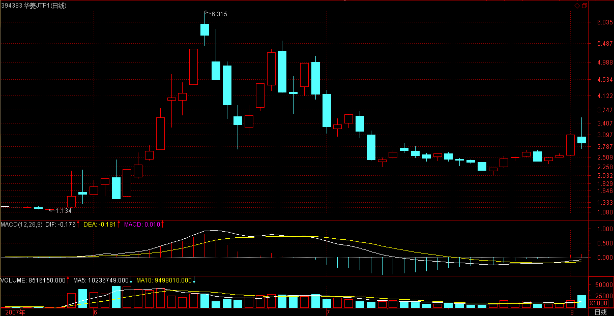
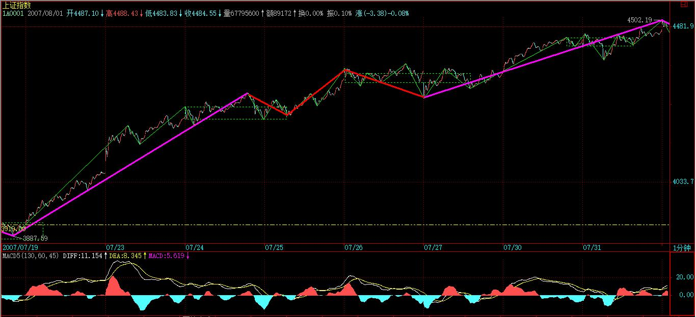

(2007-08-01 22:31:55)
今天听说以前的元帅，总是少了一个。本ID只知道有十大元帅，历史也只知道有十大元帅，历史就是历史，不能改变。至于以后发生什么，那是以后的事。但历史必须尊重。【韶山映山红】1955年授衔十大元帅：朱德、彭德怀、林彪、刘伯承、贺龙、陈毅、罗荣桓、徐向前、聂荣臻、叶剑英。】
而且，这被忽视的一个，指挥了抗日的第一场大胜利，是真正的抗日英雄，【韶山映山红】平型关大捷。是八路军出师华北抗日战场后首战大捷，同时也是全国抗战爆发以来中国军队的第一个大胜利。“此为华军在平绥线之空前胜利。”“打破了‘皇军’不可战胜的神话，提高我们的士气。”】至于解放战争中的贡献就更不用说了。【韶山映山红】解放东北全境，指挥三大战役中的辽沈战役、平津战役，然后挥师南下，经华北、两湖、两江、两广，一路打到海南岛。】如果这样的英雄的名字在几十年后还成为禁忌，那只能是历史的悲哀。【韶山映山红】缠师发此博文的时候，正是2007年8月1日建军80周年，军事博物馆陈列十大开国元帅，林彪的照片赫然在列，这是军方首次给林彪公正评价。】
旧诗一首，八一纪念真正的元帅，真正的战神：【韶山映山红】《七律一首 林彪》喜欢数学的女孩（2005-08-04 20:21:00）】
神州万里遍旗林
河汉遥传鬼魅音
红面老儿疑照眼
黄毛小子不安心
曾经百战喧天地
一夜孤行惑古今
大漠青烟散犹聚
朔风空送血魂吟
笔的划分标准在前面已经严格给出，因此，下一关键问题，就是如何划分线段。下面，给出类似笔划分，但有重大区别的划分标准。【韶山映山红】类似的是顶底分型的自同构，重大区别的是顶底分型是否有效的判别规则。】
用S代表向上的笔，X代表向下的笔。那么所有的线段，无非两种：一、从向上笔开始；二、从向下笔开始。【韶山映山红】完全分类，所有的线段无非两种。】
简单起见，以向上笔开始的线段为例子说划分的标准。
以向上笔开始的线段，可以用笔的序列表示：S1X1S2X2S3X3…SnXn。【韶山映山红】这里缠师写错了。向上线段始于向上笔，终于向上笔，因此完整序列应该是：S1X1……SnXnSn+1。】
容易证明，任何Si与Si+1之间，一定有重合区间。而考察序列X1X2…Xn，该序列中，Xi与Xi+1之间并不一定有重合区间，因此，这序列更能代表线段的性质。【韶山映山红】更适合用来描述线段的特征，所以叫特征序列。】代表线段的什么性质？★表征向上线段的向下笔跌落的幅度和位置，判断反向线段的形成情况。】
定义：
序列X1X2…Xn成为以向上笔开始线段的特征序列；【韶山映山红】以向上笔开始的线段的特征序列是向下笔。】
序列S1S2…Sn成为以向下笔开始线段的特征序列。【韶山映山红】以向下笔开始的线段的特征序列是向上笔。】
特征序列两相邻元素间没有重合区间，称为该序列的一个缺口。
关于特征序列，把每一元素看成是一K线，那么，如同一般K线图中找分型的方法，也存在所谓的包含关系，也可以对此进行非包含处理。经过非包含处理的特征序列，成为标准特征序列。以后没有特别说明，特征序列都是指标准特征序列。【韶山映山红】“以后没有特别说明，特征序列都是指标准特征序列。”意思是说，分析之前都要先进行非包含处理。】
参照一般K线图关于顶分型与底分型的定义，可以确定特征序列的顶和底。
注意，以向上笔开始的线段的特征序列，只考察顶分型；以向下笔开始的线段，只考察底分型。【韶山映山红】破坏前一线段之后，本线段才成立，才可以开始作为线段去分析，而此时，以向上笔开始的线段的前一线段是以向下笔开始的线段，底分型已经确认成立了，所以不需要再考察以向上笔开始的线段的底分型，只需要考察顶分型，为下一个线段的破坏分析做准备。】
在标准特征序列里，构成分型的三个相邻元素，只有两种可能：【韶山映山红】按照特征序列分型的第一和第二元素间是否存在特征序列的缺口为依据，做完全分类，只有两种可能：没有缺口，第一种情况；有缺口，第二种情况。】
第一种情况：【韶山映山红】第一种情况是第一笔就破坏线段的情况。这种情况的转折破坏力度大，所以一旦走出分型，前一线段就算完成。】
特征序列的顶分型中，第一和第二元素间不存在特征序列的缺口，那么该线段在该顶分型的高点处结束，该高点是该线段的终点；【韶山映山红】“该线段”是指顶分型前面的向上线段。特征序列也是顶分型前面的线段的特征序列X1X2…Xn，也就是第一特征序列。此时，后线段成立，前线段完成。】
特征序列的底分型中，第一和第二元素间不存在特征序列的缺口，那么该线段在该底分型的低点处结束，该低点是该线段的终点；【韶山映山红】“该线段”是指底分型前面的向下线段。特征序列也是底分型前面的线段的特征序列S1S2…Sn，也就是第一特征序列。此时，后线段成立，前线段完成。】
第二种情况：【韶山映山红】第二种情况就是第一笔没有破坏线段的情况。这种情况的转折力度小，还不能确定有破坏，所以需要后一线段的完成来确认前一线段的完成。】
特征序列的顶分型中，第一和第二元素间存在特征序列的缺口，【韶山映山红】这个存在缺口的特征序列是顶分型前面的线段的特征序列X1X2…Xn，也就是第一特征序列。】如果从该分型最高点开始的向下一笔开始的序列的特征序列出现底分型，【韶山映山红】这里分析的特征序列是顶分型后面的线段的特征序列S1S2…Sn，也就是第二特征序列。由于前线段还不能确定完成，所以第二特征序列是假设的特征序列。】那么该线段在该顶分型的高点处结束，该高点是该线段的终点；【韶山映山红】“该线段”是指顶分型前面的向上线段。此时，后线段成立，前线段完成。】
特征序列的底分型中，第一和第二元素间存在特征序列的缺口，【韶山映山红】这个存在缺口的特征序列是底分型前面的线段的特征序列S1S2…Sn，也就是第一特征序列。】如果从该分型最低点开始的向上一笔开始的序列的特征序列出现顶分型，【韶山映山红】这里分析的特征序列是顶分型后面的线段的特征序列X1X2…Xn，也就是第二特征序列。由于前线段还不能确定完成，所以第二特征序列是假设的特征序列。】那么该线段在该底分型的低点处结束，该低点是该线段的终点；【韶山映山红】“该线段”是指底分型前面的向下线段。此时，后线段成立，前线段完成。】
【韶山映山红】如果第二特征序列没有出现需要的分型，前线段的破坏假设不成立，就假装什么也没有发生，第一特征序列所代表的线段继续延伸。】
【韶山映山红】有人说，没有对“第二特征序列”下定义就直接使用了，其实对第二种情况的定义提到了第二特征序列，只不过没有作为一个独立的名词特别加以说明，很多人在这个地方就乱套了。如下图所示，如果我们当前正在分析80点的顶分型，绿色元素属于第一特征序列，蓝色元素就是“从该分型最高点开始的向下一笔开始的序列的特征序列”，也就是第二特征序列，在第二种情况下，就是要分析这些蓝色元素的第二特征序列是否出现底分型，以判断绿色元素的第一特征序列顶分型是否有线段破坏。】

【韶山映山红】分型右边的第一笔走完，就可以判断是哪一种情况。如果是第一种情况，下一步就是确认第一特征序列当前所在的分型成立。如果是第二种情况，需要确认第二特征序列走出后面的分型。】
强调，在第二种情况下，后一特征序列不一定封闭前一特征序列相应的缺口，【韶山映山红】这里说的“不一定封闭”是指整个第二特征序列所代表的整个线段完成的时候，不要求封闭。之前课程是要求封闭的。】而且，第二个序列中的分型，【韶山映山红】这里说的是“第二个序列”，而没有说“第二特征序列”，缠中说禅有些时候对名词的使用不是很严格，由此也引发了很多演绎出来的阅读理解，比如中枢“扩展”和“扩张”的争辩。】不分第一二种情况，只要有分型就可以。【韶山映山红】这里说的“不分第一二种情况”，在操作上，如果区分第一二种情况，那么第二种情况就要继续等后面的线段出现分型，就没完没了了。】
【韶山映山红】“第二个序列中的分型，不分第一二种情况，只要有分型就可以。”这里有一个问题，就是，这里说的分型，不应该是第二特征序列组成元素的分型，而是第二线段与第三线段的分型。也就是说，能不能把所有第二特征序列当做K线那样做完全包含处理。区别在于，这个分型是否前包含。如下图第三个，底分型算第一种情况吗？不算，又算什么？算，就不能左包含。那样的话，还有什么情况不成段？★可以做个专题，以后研究。】
上面两种情况，就给出所有线段划分的标准。显然，出现特征序列的分型，是线段结束的前提条件。【韶山映山红】第一种情况的破坏力度强，第一特征序列的分型确认成立就可以了，自己证明自己。第二种情况的破坏力度弱，第一特征序列的分型确认成立都还不够，还需要第二特征序列的分型确认成立，用后面证明前面，这时候只是证明前面线段的完成，第二特征序列的分型成立，第二线段却不一定完成了。★】
本课，就是把前面“线段破坏的充要条件就是被另一个线段破坏”精确化了。因此，以后关于线段的划分，都以此精确的定义为基础。
这个定义有点复杂，首先请先搞清楚特征序列，【韶山映山红】与线段方向相反的笔组成。】然后搞清楚标准特征序列，【韶山映山红】非包含处理以后的特征序列。】然后是标准特征序列的顶分型与底分型。【韶山映山红】向上线段的顶分型，向下线段的底分型。】而分型又以分型的第一元素和第二元素间是否有缺口分为两种情况。【韶山映山红】没有缺口第一种情况，有缺口第二种情况。】
一定要把这逻辑关系搞清楚，否则一定晕倒。
显然，按照这个划分，一切同一级别图上的走势都可以唯一地划分为线段的连接，正如一切同一级别图上的走势都可以唯一地划分笔的连接。【韶山映山红】笔、线段的划分都是唯一的，没有歧义，也就是说，笔线段的划分有标准答案，可以对答案。】
有了这两个基础，那么整个中枢与走势类型的递归体系就可以建立起来。这是基础的基础，请务必搞清楚，否则肯定学不好。【韶山映山红】“这两个基础”就是笔和线段，这是缠论的初始化，“是基础的基础”。】
最后，尽量画点图，让各位分清楚上面的一些概念，但最好把定义看清楚，这才是真正理解，图只是一个辅助。
前两个图形中标出了线段的划分。
【韶山映山红】缠中说禅在这个图里说的是“顶分型后的新特征序列”，其实表达的就是“第二特征序列”，前面一个是“第一特征序列”，而且用顶分型和底分型的K线形式画出来了。】
【韶山映山红】第二种情况的前提是第一特征序列出现相应的分型。否则，什么情况也不算。】
(2007-08-02 16:06:21)
今天，没跌破昨天本ID所说的前期两高点连线以及10日线，
所以出现反弹就理所当然了，加上外围因素的影响，也给第三拨进来的人壮了胆。
今天，也收在昨天特别强调的5日线上，但这并不意味着大盘就平安无事了。大盘在6月20、21日，也走出过类似的K线组合，而且时间上也是周三、四，而周五的下跌，就使得一轮大调整得以确立。【韶山映山红】冲高回落，长阴收。再上冲半阳收。然后长阴下。】
当然，一般来说，历史不会简单重复。这只是要提醒，今天的走势其实并不重要，关键是明天，考虑到周末消息面的因素，这个时间还要延伸到下周一，也就是说，下周一前能否确认重新站住5日线，将是短线大盘走势的关键所在。
对于新进的第三拨人，他们不想就此站上N个月的岗，必须要在这里奋力一搏，现在，比6月20、21日有很多有利的条件，技术上，MACD形态好多了，下面有前期两高点的连线，而上周的周线缺口，技术上有三周不补就以后再补的惯例，也就是说，新进来的一拨人，只要能顶住三周，至少可以把某些中线资金给忽悠进来了。
因此，对于这拨人来说，别无选择地，必须守住前期高点连线，重新站稳5日线。

但是，这拨人也有可能最终毁了市场，为什么？
这拨人如果急功近利地迅速突破4500点，引发大量新资金涌入，那么上半年的单边行情将不可避免。但目前国家对经济的总体判断与相应的对策，都在一个敏感时期，如此走势，必然导致目前对多头有利的舆论、政策环境发生极为不利的变动。
目前，比印花税还要严厉的，就是关于交易制度、规则的改变，如果谁最终乱搞，把这东西给搞出来了，那么，才是真正恶劣的事情。
所以，虽然多头目前当然有能力快速突破4500点，但一个稳健的走势依然是必要的。在4500点附近进行合理的震荡，将对市场长远的发展有好处。甚至，在4000点到4500点进行一个长时间的大箱体震荡，也比又掀起一场连续N根周K线长阳的运动要强。
当然，市场往往不会按照理智的方式进行，市场往往就是醉生梦死疯一回，那么，对于如本ID一样第一拨进来的，一定要采取这样的策略，就是绝对不增仓，因为在3600点开始都买够了，现在还买是脑子水太多的表现。
其次，采取保持仓位先卖后买打差价的策略，这样成本降低，就永远立于不败之地。
第三，一定不要听任何人忽悠马上要冲多少多少，冲是别人的事情，我们的事情就是坐轿子，你有本身把轿子抬到华山顶上，我们也没意见，但只要有人抬不动，就一定要一脚把轿子给踹了。
个股方面，成分股继续打冲锋，一旦确认周线突破成立，二、三线股会跟上的。
下面给出这次下来的一个分段。红绿箭头给出的是黄白线或柱子面积等的对比，看看就知道这些买卖点是完全可以当下判断的。
现在，一个1分钟中枢已经形成，短线走势，就看这中枢的演化，一切当下判断。【韶山映山红】这时候是5分钟上涨趋势的调整，下跌走势的回升中枢1-2-3-4，然后延伸。】
这两天，北京的雨可露了面了，本ID也不想出去腐败了，免得哪条桥又搞一个N米深的水库回不了家。
今天可以回答各位问题到5点。
【韶山映山红】缠师下面这张图贴于（2007-08-02 16:03）。】

【韶山映山红】缠中说禅博客原文标注线段的原图包括两部分，第一部分开始于2007.05.30，这时候缠论讲到了56课，还没有进化到明确的分型、笔、线段的初始化。第二部分开始于2007.08.01，这时候缠论讲到了67课，线段的概念基本建立，然后的一两个月迅速成熟。所以第二部分的线段划分是更好的教案。今天开始在我的笔记里逐段解说这三百多个线段，欢迎一起来探讨。】
【韶山映山红】线段划分及机械操作法实例分析。
0不创新高，二卖。
0-1。第一种情况，0顶分型成立。0-1内部没有线段类盘整背驰，1小级别背驰，反弹。0-1没有盘整背驰，无操作。
1-2。第二种情况，2顶分型成立。1-2内部中枢震荡盘整背驰，2转折跌回前中枢震荡区间。1没买，1-2也无操作。
2-3。第一种情况，2顶分型成立。2-3内部中枢震荡盘整背驰，3转折升破前中枢区间。2-3对0-1线段类盘整背驰，3买入。3是短期下跌走势的终点，其后将反弹形成中枢。中枢之后重新面临方向的选择。
3-4。向上跳空缺口顺势包含在向上笔中，不单独成段。3-4内部笔级别上涨趋势a+A+b+B+c，bc不背驰，4小转大下跌。3-4开盘跳空向上急拉很猛，但是很快力度放缓，最终对1-2盘整背驰，4卖出。3-4盘整背驰意味着将延续中枢的震荡。
4-5。第二种情况，5底分型成立。4-5内部中枢盘整背驰。4-5对2-3没有新低，5买入。4-5不能新低，比盘整背驰力度更弱，意味着向上的力度依然强劲。
5-6。第二种情况，还没有走完。收盘没有突破前高4，5-6力度也弱于3-4。但全天强平衡市，次日走势相对乐观，盘整中选择方向。
[匿名] 知劲草 2007-08-02 16:13:10
一直关注你的帖子，从中受益颇多，请问姐姐怎么看美股以及港股将来的走势，如果全球性股灾来临，中国能独善其身吗？【韶山映山红】“而从外因上看，外围市场的大跌无疑也给国内的投资者造成巨大的心理压力。受美国股市周二再度出现调整影响，香港恒生指数和国企指数周三低开并横盘整理，但在上午11点之后出现明显的跳水动作，最终双双收出长阴，香港市场的走势引发A股市场高位出现剧烈震荡。对于外围股市对沪深市场的影响，许多机构认为，投资者不应夸大外因的作用。虽然说目前的A股市场并非绝对的封闭性市场，国际资本市场的起伏不可避免地会影响其短期走势，但从较长远的时期看，A股市场还是有其“独立性”，A股市场最终仍将按照自己的轨迹运行。”《上海证券报 内因？外因？谁导演了170点长阴？》】
==
不可以，千万别相信中国股市逆全球股市而涨的忽悠，一天可以，二天可以，但不可能永远。
2007-8-2 16:16
[匿名] 大盘 2007-08-02 16:11:55
请问博主：进行每笔划分时，相邻k线出现以下三种情况，是否要合并处理：
1）相邻k线的高点或者低点之一相等
2）相邻两k线的高点和低点都相等
3）好几分钟都维持同一价位，也就是k线走势出现“麻点”
==
只要不包含就不需要合并，包含就是有一K线完全在相邻K线的里面。【韶山映山红】缠师不给答案，只重复定义和概念，让我们自己体会。3种情况都包含，需要合并处理。】
2007-8-2 16:18
[匿名] 新浪网友 2007-08-02 16:18:29
那么，对于如本ID一样第一拨进来的，一定要采取这样的策略，就是绝对增仓，因此在3600点开始都买够了，现在还买是脑子水太多的表现。
---------
妹子好！这句话写错了吧？
==
改了，但新浪系统慢，可能还没有显示出来。
当然，市场往往不会按照理智的方式进行，市场往往就是醉生梦死疯一回，那么，对于如本ID一样第一拨进来的，一定要采取这样的策略，就是绝对不增仓，因为在3600点开始都买够了，现在还买是脑子水太多的表现。
2007-8-2 16:19
[匿名] 悠悠 2007-08-02 16:16:30
先沙发。是新报到的。真学着感觉股感。想问缠姐对今天对3姑停盘可有什么看法，和对明天可有什么指示
==
做事情不能过分，过分，当然有搞死理由。【韶山映山红】3姑：038003华菱JTP1。】
【韶山映山红】000932华菱管线、038003华菱JTP1因公司有重大事项需公告，自2007年8月3日起停牌。实际上就停了一天。】

2007-8-2 16:20
[匿名] 田鸡和猪肝 2007-08-02 16:17:40
新学 不好意思 问题
1.怎样判断一个走势类型为完成的
2.如可确定中枢震荡形成或完成
==
这在课程里都有，要把这问题说清楚，要把所有课程说一遍，所以还是请把课程通读一遍。例如，某中枢震荡的结束就是形成该中枢的第三类买卖点，这在课程里说过N次了，所以还是请先把课程研究一下。
2007-8-2 16:24
[匿名] 轻风吹断 2007-08-02 16:20:14
今天，经过大幅下跌的华菱认沽权证继昨天反弹之后在下午继续反弹，在整个交易过程中并没有出现剧烈波动的现象．而按照原来的权证交易规则，华菱的涨停价位应该是４.２９１元！也就是说，只有在这个价位才能自动停牌！但你们深交所在下午１３时４３分１６秒起突然对华菱等权证实施了停牌３０分钟的措施，理由居然是＂价格异常波动＂！请问深交所，按你原来的规则此权证涨停价位在４.２９１元，那就是说你允许它涨到这个价位．既然你认为可以涨到这个价位，为什么在此权证还在远离这个价位的时候就说＂异常波动＂了呢？如果这样是异常波动，那涨停价位不是更加是＂异常波动＂，那你们为什么还允许有这个涨停价位？现在，你们自己制造的规则，自己一手打破，请问深交所，这是什么道理？另外，要说＂异常波动＂，股票市场＂５.３０＂大跌后的第五个交易日，大部分股票从跌停板到涨停板，差价波动幅度达到了２０％，这还不够异常吗？当时为什么你们又不将这些股票停牌？
【韶山映山红】
关于“华菱JTP1”盘中临时停牌的公告
“华菱JTP1”（证券代码038003）今日交易价格异常波动。根据《深圳证券交易所交易规则》和《深圳证券交易所权证管理暂行办法》有关规定，本所自今日13时43分16秒起对该权证实施临时停牌30分钟，于14时13分复牌。
本所已对该权证交易实施重点监控，对涉嫌违规行为的帐户将采取限制交易、上报中国证监会查处等措施。
本所郑重提示广大投资者注意投资风险，理性投资。
特此公告
深圳证券交易所
2007年8月2日

-------
想听听博主对今天这个事件的看法.
==
327的时候，成交都可以不算，这有什么奇怪的。政策风险本来就是要随时预防的，所以一定要记住，股票是废纸，一定要买点买，只有0成本才是相对安全的，否则无安全可言。
另外，这件事情其实也是一个信号，如果股票也这样，那么规则也是可以改的。
股票是用来操作，不是用来争吵的。股票里，赢钱就是对的，输钱就是错的，其他都是废话。
至于交易所，真正的垄断性机构，如果对他的规则有疑问，可以去外面的交易所，如果一定要在这里，那么，就必须要知道，你面对的是一种什么样的玩意，先把这先决条件给设定好了，否则，那是你的问题，而不是交易所的问题。
2007-8-2 16:37
[匿名] 天平007 2007-08-02 16:34:23
缠主:看了你的文章3个月，今天第一次发言：）通过学习你的理论，很是受用，也在市场中取得不错的收获，谢谢你！
现请教一问题：昨日大盘下跌，你说是15分钟背弛，这我同意，15分钟的确有出现背弛。
可我发现30分钟和60分钟也出现了MACD背弛，而你认为60分钟还没出现背弛，我有些迷惑，请指教。
------
[匿名] 新浪网友 2007-08-02 16:37:23
60分钟黄白线还没回抽零轴呢。这是我的理解。
====
对
【韶山映山红】所以，30分钟和60分钟可以看到是次级别的背驰。有时候做区间套到了1分钟图就这样看次级别背驰。】
2007-8-2 16:38
[匿名] 百思不解 2007-08-02 16:39:09
博主好：笔和线段的概念很清楚了，现在就是同级分解的细节有困惑。
比如1f图上线段已划分好，则对1f走势类型做同级分解，请问这同级分解规则能否象线段划分规则一样用严格的数学语言表达呢？
以前课程里虽有大概的描述，但文字描述总有细节不清楚的地方。请博主有时间象讲解线段一样详细讲讲同级分解，最好能在指数图上画出来。
谢谢
==
这在以后都继续说到的，等等。【韶山映山红】可惜，缠论最终并没有完成进化。】
2007-8-2 16:43
christine 2007-08-02 16:42:11
姐姐，昨晚的新课程看得我很晕，我的理解水平太差了。
1.在标准特征序列里，构成分型的三个相邻元素。是指构成分型的三笔吗？
2."特征序列的顶分型中，第一和第二元素间不存在特征序列的缺口，那么该线段在该顶分型的高点处结束，该高点是该线段的终点；.....；"和“特征序列的顶分型中，第一和第二元素间存在特征序列的缺口，如果从该分型最高点开始的向下一笔开始的序列的特征序列出现底分型，那么该线段在该顶分型的高点处结束，该高点是该线段的终点；......”此二段描述看着没有什么区别
==
特征序列里的三相邻元素不是真实图形的连续的三笔，里面的元素如果是上的线段，是那些向下笔，这在课程里说得很清楚，先把这搞清楚，否则后面肯定看不明白了。
这特征序列的分型，是把特征序列里每一元素当成一个K线所形成的，不是实际图形上的分型。请再研究一下。【韶山映山红】所以神燕就索性把特征序列里每一元素画成一个K线去看包含和分型，逻辑思维图形化，不失为一个取巧的好方法。】
2007-8-2 16:47
[匿名] 随风 2007-08-02 16:47:12
姐姐对近期的物价全面上涨怎么看?国家是不是失控了?
==
你看看本ID写的关于货币战争的帖子，2003年没干的事，现在出现这种情况理所当然。
现在的问题还不在这里，而是这升值的战车一旦坐上去，就停不下来了，历史上，如此大规模的升值走势后，似乎从来没有过软着陆的情况，中国能否例外，只有天知道了。
2007-8-2 16:51
[匿名] 新浪网友 2007-08-02 16:51:12
老大:图中下面的红\绿箭头不明白啥意思,能否告知一二.(可能问题太幼稚了,不过真的不明白)

==
就是要你看箭头指着的黄白线或柱子面积之间的对比。【韶山映山红】三组背驰对比。】
2007-8-2 16:52
[匿名] 新浪网友 2007-08-02 16:51:27
老大辛苦了 那个600636跟老大当初所说的相差甚远 希望老大能回答一下 谢谢
【韶山映山红】600636三爱富。】
==
636没什么问题，在长线建仓中。就像737，虽然从7元多到10元多了，依然在长线建仓中。注意，建仓都是动态的，如果成本没被降到一定值，建仓完不了。

一个天大的误解，就是建仓时成本要很高，其实高明的人，建仓时，成本就可以不断下降，当然，这种手法，对没耐心、短线思维的人，是痛苦的。所以本ID说过，散户也要学会动态建仓。【韶山映山红】所谓“动态建仓”其实就是缠师反复强调的：比操作级别更低级别的买点买、卖点卖地不断做短差。另外，底部建仓、拉升、顶部出货的时代过去了，可以动态建仓，就可以动态出货。顶底不同构。】
2007-8-2 16:59
钱末事 2007-08-02 16:58:28
老大,快5点了,我贴了N次了,问个问题,权证数量发生较大改变,用MACD比较力度怎么去校正呢?另外有空讲讲三个系统另外一个比价系统,好吗?谢谢.
==
无须校正，【韶山映山红】类似于复权问题。】
那以后会说到的【韶山映山红】三个系统另外一个比价系统，72、73课有说。】
2007-8-2 17:01
对不起，5点到了，下次有时间再回答问题。
先下，再见。
2007-8-2 17:03
(2007-08-02 22:17:41)
今晚家里吃饭时，聊起“超女”、“快男”、90后粉丝，现用七律打油一首给他们画个像：
新新人类
缠中说禅
新新人类苦经营
另类潮流另类名
拒绝崇高大叙事
传播通俗小言情
马蜂窝后撒无赖
老鼠店中装有成
玩转全球湿湿碎
牛皮吹破太阳城
(2007-08-03 15:57:58)
坐轿子的感觉确实不错，坐在轿子上看沿路风景，别有一番情趣。
下面，是关于坐轿子上华山的第一天日记。这个日记，将有N日N章。
今天大盘的跳空高开，就使得6月20前后的K线组合不可能出现。昨天已经说过“市场往往不会按照理智的方式进行，市场往往就是醉生梦死疯一回”，站在第三拨人的立场上，尽快远离4300点，吸引第四拨人进来，本来就是急切的事，至于后面将引发什么，他们当然无所谓，而前两拨人就更无所谓。一般来说，越到后面的第N拨，其成分将越来越杂乱，如果说第一拨人的成分是最纯净的，到后来，就三教九流，什么都有了。【韶山映山红】第一拨人是资深猎人，然后是各种投机动物。】
今天的大盘开始迎来第四拨人里的先头部队，周末如果没有什么太大的坏消息，那么，第四拨人里的主力部队将在下周大面积进入。这拨人的成分将比第三拨更杂，有前三拨中中途开小差的逃兵，有看所谓周线突破有效进入的技术人士，有在外面卖外卖现再回家开店的、更大面积的是那些被钱烧得发慌的各路男女等等，醉生梦死疯一回游戏正式开始。

对于前三拨进来的人，从现在开始，最后埋单的是谁，是N等于几，已经不重要，关键是如何把这个游戏玩得长一点，但这个时间并没有什么上帝去规定，一个合力的结果下，从下周一开始，这个游戏的时间T开始计算，T从0开始，向着尽可能大的数进发。这就如同玩电子游戏，去预测在第几关结束是脑子有水的表现。
也正如玩游戏，关键是操作的策略，而不是去预测游戏在第几关结束。目前的操作也一样，预测都是无聊把戏，关键是有精密的操作。而操作是针对不同人的，如同玩游戏，高手和低手当然不是同一玩法：
对于低手，本ID反复说过最基本的操作策略，就是短线看5日线，中线看5周线，长线看5月线，只要不有效跌破，相应的操作就不用操作了，持股看着就可以。
何谓有效跌破，就是跌破后反抽上不来，这种反抽当然和对应级别有关，例如一个月线的跌破，至少要看下个月反抽的情况，而不是看一日。【韶山映山红】反抽看次级别，也就是周线反抽。】
对于大资金以及散户里的中高手，就是要利用震荡机会就减低成本，一路上涨，一路把成本减下来但持仓数量不变，这样，你的仓位就自然随着大盘的上涨下降，也就是钱越来越多，但筹码没少，这样，是既回避大盘可能的突发非系统风险，又能完全把握市场利润的有效方法。
对于散户里的高手，就要充分利用大盘震荡中板块的轮动机会，获取市场最大的机会。
有人可能问，做不到高手怎么办？那就做低手，持股都不会，大盘晃悠一下就鸡飞狗跳的，那还炒什么股票，让股票炒你就行了。
昨天已经说了“个股方面，成分股继续打冲锋，一旦确认周线突破成立，二、三线股会跟上的。”这个结论继续有效，而且，只要第四拨资金能被忽悠进来，那些已经消除业绩风险的二、三线股，以及有题材的股票将大肆表现，例如，你没看到这两天，本ID已经大肆引诱各位到北京旅游了吗？
【韶山映山红】000802北京旅游，2014.10.24变更为北京文化。】

注意，题材股的操作，一定不要追高，过了这个村，还有那个店，天天都有新机会，不管谁的股票，都不必追高。
股票都是废纸，一个好的策略与心态，能让你把废纸变黄金。
技术上，把今天的分段放上来，还搞不清楚的，请好好学习。例如下图中的7，这是什么？是下面那1分钟中枢的什么？这么标准的图形，都看不明白，那请把ID的课程重新读去。【韶山映山红】1分钟中枢的三买。难得这么清晰而标准。】
周末，腐败的时间到了，大家放风去吧，别让股票把自己的生活套牢了，本ID要去风花雪月去也，不陪各位了，自由活动，周日继续音乐会，这次一定不爽约。
先下，再见。
【韶山映山红】缠师这张图贴于（2007-08-03 15:55）。】
【韶山映山红】线段划分及机械操作法实例分析。
5-6，第二种情况，6顶分型成立。这里5.6的向上跳空缺口，由于本身就在向上段，所以不单独成段。5-6内部趋势a+A+b+B+c的c没有形成三买，b、c中枢盘整背驰。6.1跌破前中枢区间。5-6对3-4没有线段盘整背驰，无操作。8月3日的跳空高开一扫前日软绵绵的走势，破坏了5-6对3-4的盘整背驰，显然市场选择了更高位置的盘整，可以继续看好后市。
6-7，第一种情况，6顶分型成立。6-7内部没有线段类盘整背驰。7的转折是小转大。6-7没有跌破前高4，无操作。后续强可以形成线段级上涨，弱可以形成横向盘整中枢，更弱向下跌回前中枢1-4。
7-8，第一种情况，7底分型成立。7.3-7.4这里，红箭头的地方按缠师的图应该不成笔，所以用红箭头标记了一下。下面贴了局部放大图，看不清。7-8对5-6线段类盘整背驰，7-8内部两段也盘整背驰，后续形成线段类上涨趋势的希望不大了，有次日形成中枢的意思。】
【韶山映山红】总结8月1日-3日的调整：5分钟中枢的离开段盘整背驰，被一个1分钟的盘整下跌就化解了。
其中顶部的盘整背驰有三重区间套定位，5分钟中枢、1分钟线段中枢、1分钟笔中枢，这三重都是中枢离开段盘整背驰。

最终，笔中枢盘整背驰的第一笔没有跌回笔中枢，三笔跌回笔中枢区间；
1分钟线段中枢盘整背驰的第一段跌回线段中枢振荡范围，第三段直接跌穿线段中枢，跌进了5分钟中枢振荡范围。】
(2007-08-04 18:54:59)
今天播放的是四部作品，都是贝多芬在各类形式中的第一次，一个非贝多芬的贝多芬。分别是第一钢琴奏鸣曲、第一小提琴奏鸣曲、第一弦乐四重奏、第一交响乐。
这些作品，和海顿、莫扎特的距离不大，但绝对不是完全模仿之作，里面已经有了贝多芬的影子。从这里作品，可以看出一个音乐巨人是如何生长出来的。
在写这些作品的时候，贝多芬的耳朵还没有构成其生命的压力，作为两位前辈大师的最大继承者，命运对他展现的都是阳光。
一个命运阳光下的贝多芬，注定不是贝多芬。【韶山映山红】真是悲剧啊。】
【韶山映山红】试听链接：第一钢琴奏鸣曲、第一小提琴奏鸣曲、第一弦乐四重奏、第一交响乐。】
本课目录
教你炒股票67：线段的划分标准明天才是大盘短线的关键七律：新新人类醉生梦死疯一回游戏正式开始周末音乐会41：贝多芬的第一次